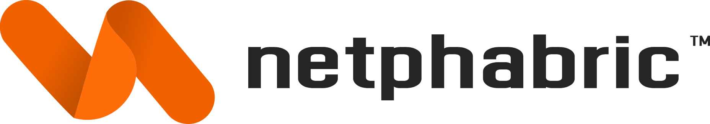

/ˈa.banˈse.kə/
/sɪlˈvɛs.tər/
ÁbànsƏka
Ʒylvester
̚
I'm a frontend developer focused on building clean, reliable, and
user-friendly web experiences. currently working at
and recently launched
berikids.org for an NGO supporting
orphans in Cameroon.
I'm also building

, a startup helping businesses grow through smart web audits, design,
and development.
you can always reach me at abansekasly98@gmail.com or
 ⟵
shoot a direct DM to my X inbox
⟵
shoot a direct DM to my X inbox